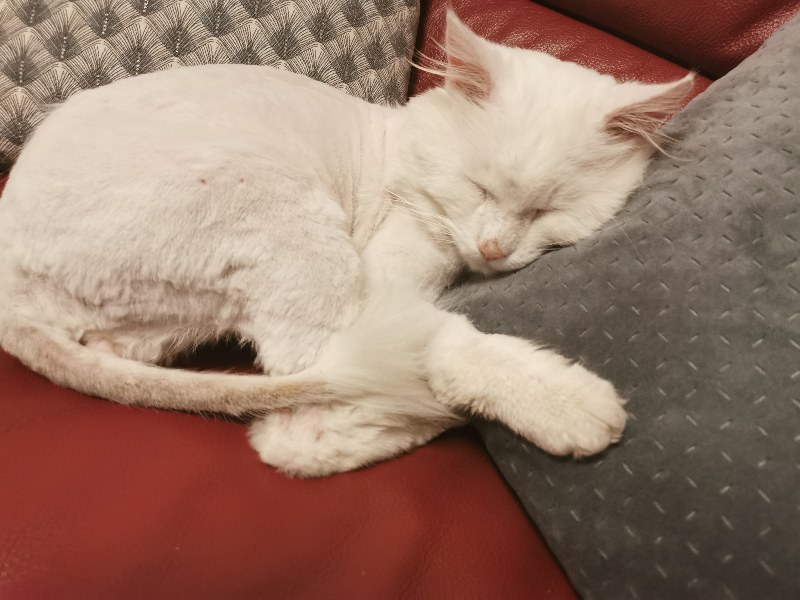

✩ LOS GATITOS ✩
✭ Bienvenue sur la page de Pamuk ✭
Ses caractéristiques
Couleur des yeux: Jaune
Couleur des poils: Blanc
Corpulance: Grand
Propriétaire: Melda (moi)
Personnalité
Pamuk est un chat très sociable, il aime tout le monde et ne cherche pas la baguarre.
Il adore les calins, je dirais même que c'est une de ses activitées préférées./ᐠ｡▿｡ᐟ\ᵖᵘʳʳ
Pamuk n'a jamais griffé ni mordu personne, c'est le plus gentil. Pour finir il adore bien manger.
Fun fact
Il est déjà rentré chez un de mes voisins qui habite au bout de notre rue par la chatière pour manger les croquettes de leur chat et il les a TOUTES mangé ! (le paquet..)
Photo Bonus
Pamuk après la douche
Pamuk rasé (pour raison médicale on ne le maltraite pas.)
